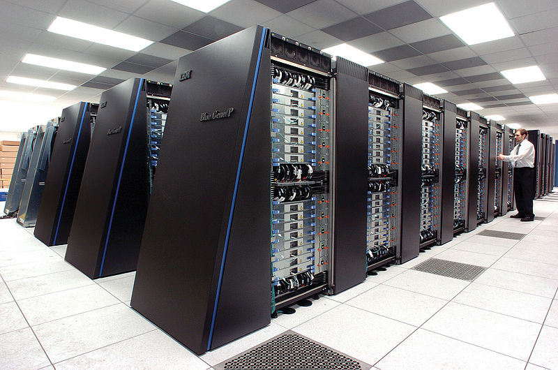

Neuroinformatics
{kind=link}

{kind=link}
{kind=link}
Neuroinformatics is concerned with developing computational techniques for understanding the brain. Specifically, processing and analysing experimental data, and simulating models. This work is becoming increasingly important as neuroscientists study larger and more detailed systems, requiring the use of high performance computational techniques which are not, as yet, easily accessible for non-experts. Much of our research is about leveraging modern, heterogeneous forms of computing such as GPUs and FPGAs, but making them accessible to neuroscience researchers.
Our main ongoing area of research is in simulating spiking neural networks: on the design of the Brian simulator and related software packages.
If you are interested in working on these types of problems, please see our openings page and the list of suggested research topics. See also the list of neuroinformatics publications below for an idea of the sort of research we have done in this field in the past.
Publications in neuroinformatics
Preprints
-
Stimberg M, Goodman DFM, Nowotny T
Brian2GeNN: a system for accelerating a large variety of spiking neural networks with graphics hardware.
2019
-
Stimberg M, Goodman DFM, Brette R, De Pittà M
(2019)
Modeling neuron-glia interactions with the Brian 2 simulator.
2018
-
Blundell I, et al.
(2018)
Code Generation in Computational Neuroscience: A Review of Tools and Techniques.
Frontiers in Neuroinformatics doi:10.3389/fninf.2018.00068 -
Dietz M, et al.
(2018)
A framework for testing and comparing binaural models.
Hearing Research
2016
-
Rossant C, et al.
(2016)
Spike sorting for large, dense electrode arrays.
Nature Neuroscience
2014
-
Stimberg M, Goodman DFM, Benichoux V, Brette R
(2014)
Equation-oriented specification of neural models for simulations.
Frontiers in Neuroinformatics 8:6 -
Kadir SN, Goodman DFM, Harris KD
(2014)
High-dimensional cluster analysis with the masked EM algorithm.
Neural Computation 26:11
2013
-
Goodman DFM, Brette R
(2013)
Brian simulator.
Scholarpedia 8(1):10883 -
Goodman DFM, Brette R
(2013)
Brian Spiking Neural Network Simulator.
-
Rossant C, Fontaine B, Goodman DFM
(2013)
Playdoh: a lightweight Python package for distributed computing and optimisation.
Journal of Computational Science 4(5):352-259
2012
-
Brette R, Goodman DFM
(2012)
Simulating spiking neural networks on GPU.
Network: Computation in Neural Systems 23(4)
2011
-
Fontaine B, Goodman DFM, Benichoux V, Brette R
(2011)
Brian Hears: online auditory processing using vectorisation over channels.
Frontiers in Neuroinformatics 5:9 -
Brette R, Goodman DFM
(2011)
Vectorised algorithms for spiking neural network simulation.
Neural Computation 23:6 -
Rossant C, Goodman DFM, Fontaine B, Platkiewicz J, Magnusson AK, Brette R
(2011)
Fitting neuron models to spike trains.
Frontiers in Neuroscience 5:9
2010
-
Goodman DFM
(2010)
Code Generation: A Strategy for Neural Network Simulators.
Neuroinformatics 8, no. 3 (9). -
Rossant C, Goodman DFM, Platkiewicz J, Brette R
(2010)
Automatic fitting of spiking neuron models to electrophysiological recordings.
Frontiers in Neuroinformatics
2009
-
Goodman DFM, Brette R
(2009)
The Brian simulator.
Frontiers in Neuroscience 3(2) -
Brette R, Goodman D
(2009)
Brian: a simple and flexible simulator for spiking neural networks.
The Neuromorphic Engineer
2008
-
Goodman D, Brette R
(2008)
Brian: a simulator for spiking neural networks in Python.
Frontiers in Neuroinformatics 2(5)